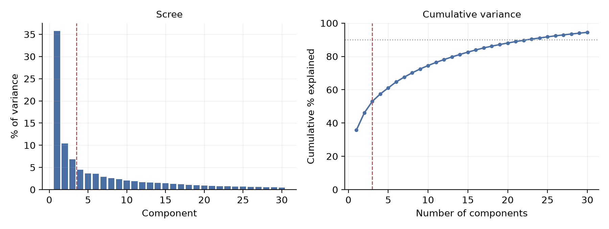
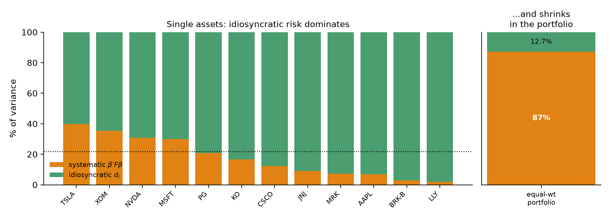

Factor Models: Construction and Use
FinTech 545 — Week 09
Why We Need Factor Models
Where Week 08 Left Off
Week 07 covered CAPM, APT, and the Fama French family.
Week 08 used those factors to attribute realized risk and return.
Both times the factors were handed to us. This week we build them.
Counting Parameters
A covariance matrix for n assets has
\frac{n(n+1)}{2}
free parameters.
For n = 100 that is 5,050 numbers.
The Data We Have
The 100 largest stocks in SPY, T = 60 days, 8 July to 30 September 2026.
5,050 parameters from 6,000 data points.
What Actually Breaks
| n | T | Parameters | Rank of \widehat{\Sigma} | \lambda_{\min} | Non-zero columns in L |
|---|---|---|---|---|---|
| 100 | 60 | 5,050 | 59 | \sim -10^{-18} | 59 of 100 |
A Certainty, Not an Error
The rank is \min(T-1, n) = 59.
A sum of T rank-one outer products cannot have rank greater than T. Centering the data costs one more.
With n > T the sample covariance is always singular.
What Did Not Break
The PD Cholesky fails.
The Week 03 PSD Cholesky, chol_psd! in the course library, does not. It returns a root with 41 zero columns and reproduces \widehat{\Sigma} = LL' to 9.9 \times 10^{-16}.
The Week 03 PCA simulation works too. Simulate from 59 draws instead of 100.
We can factor the matrix and simulate from it. That is the problem.
Every Scenario Is a Day We Have Seen
L has rank 59. Every simulated r = Lz lies in a 59 dimensional subspace of \mathbb{R}^{100}.
That subspace is the span of the 60 demeaned historical observations.
There is no information in the estimate about the other 41 directions.
Not Silent. Wrong.
The matrix does not say “unknown” about those 41 directions.
It says they have exactly zero variance.
A Riskless Portfolio
Estimate on the first 30 days. The null space is now 71 dimensional.
Pick a portfolio in it with weights summing to 1. Max weight 5.4%, gross 1.5x. Ordinary looking.
| Value | |
|---|---|
| Forecast volatility (in-sample) | 0% to numerical precision |
| Realized volatility, same 30 days | \sim10^{-14}% |
| Realized volatility, next 30 days | 6.82% |
| FF3 factor model forecast, same portfolio | 7.38% |
Internally Consistent
The estimate calls the portfolio riskless, and in sample it is.
Out of sample it runs at 6.8%.
The factor model never assigns zero risk to anything. It said 7.38%.
The Optimizer Finds It
Minimum variance on all 60 days, with a pseudo-inverse. The answer depends on the cutoff for “zero.”
Default tolerance: 6.2% long to 5.1% short, 2.23x gross.
Keep the 10^{-18} rounding noise: 49% in one name, 7.35x gross.
The true minimum under the sample matrix is zero. The optimizer finds whatever the estimate, or your cutoff, says is riskless.
Way Out 1: Repair the Matrix
Week 03: Rebonato and Jackel, Higham, PSD Cholesky, PCA.
None of them adds information.
They fix a matrix that is nearly good and was corrupted by floating point error or missing data. A numerical problem with a numerical fix.
Ours Is Not Numerical
Raise 41 zero eigenvalues to some small positive number and you can invert the matrix.
The directions are arbitrary. The risk along them is whatever you picked when you patched it.
You have converted “I know nothing here” into a specific number.
Way Out 2: Change the Model
If returns are driven by a small number of common factors,
\Sigma = BFB' + D
406 parameters instead of 5,050. Full rank and invertible for any T.
The rank comes from the structure, not from a patch.
The Trade
Every asset gets its own strictly positive specific variance. No portfolio is ever called riskless.
We buy conditioning, tractability, and interpretable exposures with a structural assumption.
If the assumption is wrong we get a well behaved matrix that is confidently incorrect.
The General Linear Factor Model
One Asset, One Date
r_{i,t} = \alpha_i + \sum_{k=1}^{m} \beta_{i,k} f_{k,t} + \varepsilon_{i,t}
The Cross-Section
r_t = \alpha + B f_t + \varepsilon_t
r_t is n\times 1, B is n \times m, f_t is m \times 1.
Stack all T dates:
R = \mathbf{1}\alpha' + F B' + E
Three Things Called “The Factor”
| Term | Symbol | Dim. | What it is |
|---|---|---|---|
| Exposure / loading / beta | B | n\times m | how much of factor k asset i carries |
| Factor return | f_t | m\times 1 | what the factor did in period t |
| Factor premium | E[f] | m\times 1 | long run expected reward for the exposure |
Keep Them Straight
“Apple has a high momentum beta.” A statement about B.
“Momentum was up 40bp yesterday.” A statement about f_t.
“Momentum earns 3% a year.” A statement about E[f].
Only the last is an asset pricing claim. The first two are risk statements.
Assumption 1
E[\varepsilon_{i,t}] = 0
The residual has no drift.
Anything systematic left in the residual becomes \alpha. And \alpha is either skill or a missing factor.
Assumption 2
\operatorname{cov}(f_{k,t}, \varepsilon_{i,t}) = 0
In a time series model fit by OLS this holds in sample by construction. It is a property of the residual, not a testable claim.
Out of sample it is a real assumption.
Assumption 3
\operatorname{cov}(\varepsilon_{i,t}, \varepsilon_{j,t}) = 0 \quad i \neq j
The residual covariance D is diagonal.
This is the load bearing assumption. It collapses the parameter count, and it is the one most often false.
Everything Follows From This Line
\Sigma = \operatorname{cov}(r) = B\,\operatorname{cov}(f)\,B' + \operatorname{cov}(\varepsilon) = BFB' + D
with F = \operatorname{cov}(f) and D = \operatorname{diag}(d_1,\dots,d_n).
Three Ways to Build a Factor Model
Two Unknowns
R = FB' + E has two unknowns on the right.
Which one you treat as observed determines the type of model and the direction of the regression.
What Is Observed

What is observed and what is estimated in each approach
The Three Types
| Observed | Estimated | Regression | Examples | |
|---|---|---|---|---|
| Time-series | f | B | one per asset, over time | Fama French, Carhart, macro |
| Cross-sectional | B | f | one per date, across assets | BARRA, Axioma, Fama MacBeth |
| Statistical | neither | both | eigendecomposition | PCA, factor analysis |
No Correct Choice
Time-series. The factors are economically meaningful and observable. Market, rates, oil, the published FF portfolios. Best for attribution against a standard.
Cross-sectional. Good firm characteristics and a large, changing universe. What the commercial risk vendors sell.
Statistical. The risk structure with no priors, or a diagnostic on the other two.
Time-Series Models
OLS, All At Once
The factor returns are given. OLS once per asset, but every asset shares the same right hand side.
X = [\mathbf{1} \;\; F], T \times (m+1):
\widehat{\Theta} = (X'X)^{-1}X'R \qquad \widehat{\alpha} = \widehat{\Theta}_{1,\cdot}\,,\quad \widehat{B}' = \widehat{\Theta}_{2:m+1,\cdot}
One (m+1)\times(m+1) inverse serves all n assets.
Specific Variances
E = R - X\widehat{\Theta} and
\hat{d}_i = \frac{1}{T-m-1}\sum_{t=1}^{T}E_{t,i}^2
With T = 60 and m = 3, divide by 56, not 60.
Ignoring that biases every specific variance down by 7%, and the whole risk model with it.
FF3 on Our Data
| TSLA | MSFT | NVDA | CSCO | AAPL | BRK-B | JNJ | XOM | |
|---|---|---|---|---|---|---|---|---|
| \beta_{\text{Mkt}} | 2.560 | 1.613 | 1.549 | 0.862 | 0.473 | 0.079 | 0.032 | -0.695 |
| \beta_{\text{SMB}} | -0.315 | -0.907 | -0.539 | -0.805 | 0.476 | 0.112 | 0.097 | -0.841 |
| \beta_{\text{HML}} | -0.410 | -0.609 | -0.712 | -0.219 | 0.777 | 0.278 | 0.623 | 0.624 |
| R^2 | 0.40 | 0.30 | 0.31 | 0.12 | 0.07 | 0.03 | 0.09 | 0.35 |
| Ann. \sigma | 50.4% | 41.3% | 40.3% | 34.6% | 28.1% | 14.7% | 20.7% | 26.0% |
Read the Signs
HML is sensible. TSLA, MSFT, NVDA negative, growth names. XOM and JNJ positive.
XOM has a market beta of -0.70. The market was driven by technology. Energy went its own way.
AAPL, BRK-B, JNJ: R^2 below 0.10. Sixty days describe sixty days, not the company.
20%
Across all 100 stocks the mean R^2 is 0.205.
From 0.003 (RTX) to 0.548 (COF).
Three factors explain about 20% of a typical stock’s daily variance. Hold on to that number.
Full Sample or Rolling
Full sample. Equal weight on every observation. Lowest estimation error. Assumes beta is constant over the window.
Rolling or exponentially weighted. Tracks changing exposure at the cost of noisier estimates.
The Cost of a Short Window
\operatorname{se}(\hat\beta_k) \approx \frac{\sigma_\varepsilon}{\sigma_{f_k}\sqrt{T}}
Halving the window multiplies the standard error by \sqrt{2}.
Our median market beta standard error is already 0.36. A rolling 20 day beta on daily data is mostly noise.
My Opinion
On daily data, use at least a year.
If you need faster adaptation, use exponential weighting rather than a short window.
You keep the effective sample size and still down-weight the past.
Cross-Sectional Models
Invert the Problem
Observe the betas. Estimate the factor returns.
The betas come from firm characteristics:
- Industry or sector membership, as 0/1 dummies
- Size, \log(\text{market cap})
- Value, book to price or earnings to price
- Leverage, profitability, trading activity, historical volatility
Descriptors
Observable today, for every stock, with no regression.
A newly listed stock has a book to price ratio on day one.
It has no beta until you have a return history.
Standardize
\log(\text{cap}) is around 25. Book to price is around 0.3.
Standardize cross-sectionally at each date:
z_{i,k} = \frac{x_{i,k} - \bar{x}_k}{s_k}
A factor return is then the return to one unit of standardized exposure.
Winsorize
Clip at roughly \pm 3.
One stock with a book to price of 40, because its book value is an accounting artifact, will otherwise run the entire regression for that day.
One Regression Per Date
r_t = B f_t + \varepsilon_t \qquad\Longrightarrow\qquad \hat{f}_t = (B'WB)^{-1}B'W r_t
n observations, m regressors. The opposite orientation from the time series case.
Repeat over T dates for a time series of factor returns.
The Weighting Matrix
W = D^{-1}, inverse specific variance. GLS, efficient if D is known.
W = \operatorname{diag}(\sqrt{\text{mktcap}}). A common vendor choice. Damps small illiquid names without letting the mega caps run the regression.
GLS needs D, which needs residuals, which needs the regression. Iterate: OLS, estimate D, re-run as GLS.
Factor Returns Are Portfolio Returns
\hat{f}_t = \underbrace{(B'WB)^{-1}B'W}_{\textstyle \Omega,\ \ m\times n} \, r_t
\Omega does not depend on r_t.
\hat{f}_{k,t} = \sum_{i=1}^{n} \Omega_{k,i}\, r_{i,t}
Each row of \Omega is a portfolio. These are factor mimicking portfolios.
Three Consequences
- The estimated factor returns are achievable. You can hold the portfolio.
- \Omega B = I. Unit exposure to factor k, zero to every other. Purified in a way Fama French is not. HML has a well known negative market beta.
- A hedge. Short the mimicking portfolio to neutralize an unwanted exposure.
Identification
A market column of ones plus a full set of industry dummies.
The dummies sum to the market column. B is rank deficient. (B'WB)^{-1} does not exist.
Force the industry factor returns to sum to zero:
\sum_{k \in \text{industries}} c_k f_{k,t} = 0
Solve Through KKT
\begin{bmatrix} B'WB & C' \\ C & 0 \end{bmatrix} \begin{bmatrix} f_t \\ \lambda \end{bmatrix} = \begin{bmatrix} B'W r_t \\ 0 \end{bmatrix}
C = [\,0 \;\; c_1 \;\cdots\; c_K\,]: a zero for the market, c_k for each industry.
Three Constraints
The c weighted average industry factor is zero. Each industry is measured against an “average industry,” and c defines average.
| Name | c_k | Each industry counts | Industries measured against |
|---|---|---|---|
| Equal | 1 | once, whatever its size | the average industry |
| Count | n_k, stocks in industry k | by how many stocks it holds | the average stock |
| Cap | industry k’s share of market cap | by its market value | the average dollar |
28 Tech stocks, 7 Staples. Equal: they count the same. Count: Tech counts 4x. Cap: 43.8% against 5.1%, more than 8x. Our model uses equal.
The Constraint Is Not Cosmetic
It defines what “the market factor” means.
With the cap constraint and cap weights in W, the market factor return is the cap weighted market return and the industries are pure relative effects.
Change the constraint and you change the interpretation of every factor.
Choosing W
W sets how much each stock counts in the daily regression.
It also sets what the factors are. Every factor return is a portfolio return through \Omega = (B'WB)^{-1}B'W.
A different W is a different set of portfolios.
Four Choices
| W | Market factor tracks | Efficiency | Needs | Main weakness |
|---|---|---|---|---|
| I (OLS) | equal weighted stocks | low | returns only | small caps dominate |
| D^{-1} (GLS) | a low specific risk tilt | highest, if D is right | a first pass for D | not an index, inherits error in D |
| mktcap | the cap weighted index | low | market caps | mega caps dominate the factors |
| \sqrt{\text{mktcap}} | close to the cap weighted index | middle | market caps | only approximately the index |
GLS on Our Data
The market factor’s largest weights: PEP 3.3%, HD 3.3%, DIS 2.7%. None is above 0.7% of the cap weighted index.
AAPL is 10.7% of the index and gets 0.4%. SNDK gets 0.08%.
That is a low volatility portfolio, not an index.
Cap Weights Cut Both Ways
Cap. The market factor is the index. Factor returns reconcile to the benchmark.
But the mega caps run the regression. An industry factor becomes its two or three largest names, stock specific news included.
Square root of cap. The vendor compromise. Damps small names without handing the regression to five stocks.
Which W
Against a cap weighted benchmark: \sqrt{\text{mktcap}} with the cap constraint.
For the cleanest factor returns: GLS.
Cap the largest weights either way. And state the choice. Factor returns from different W are not comparable.
The Market Factor Is a Portfolio
Market column plus industry dummies, diagonal W. The fit for industry g is the W weighted industry average:
\hat{f}_{\text{mkt},t} + \hat{f}_{g,t} = m_{g,t} = \frac{\sum_{i \in g} W_{ii}\, r_{i,t}}{\sum_{i \in g} W_{ii}}
The constraint makes the market factor the c weighted average of those:
\hat{f}_{\text{mkt},t} = \sum_k \tilde{c}_k\, m_{k,t}, \qquad \tilde{c}_k = \frac{c_k}{\sum_j c_j}
Across and Within
\omega_i = \tilde{c}_{g(i)}\,\frac{W_{ii}}{\sum_{j \in g(i)} W_{jj}}
The constraint sets the weight across industries. W sets it within each one.
- mktcap, cap constraint: exactly the cap weighted index
- I, count constraint: exactly the equal weighted index
- D^{-1}, equal constraint, ours: one eighth per industry, quiet names favored
What It Does to \hat{f}_{\text{mkt}}
| W | Constraint | Ann. vol | Corr, cap 100 | Beta, cap 100 | TE vs cap 100 | TE vs SPY |
|---|---|---|---|---|---|---|
| I | Equal | 8.7% | 0.737 | 0.527 | 8.20% | 7.27% |
| I | Count | 10.2% | 0.878 | 0.737 | 5.82% | 4.49% |
| D^{-1} | Equal | 8.4% | 0.631 | 0.437 | 9.44% | 8.50% |
| D^{-1} | Count | 9.5% | 0.837 | 0.653 | 6.67% | 5.30% |
| D^{-1} | Cap | 12.2% | 0.873 | 0.877 | 6.12% | 4.75% |
| \sqrt{\text{mktcap}} | Cap | 13.0% | 0.960 | 1.028 | 3.64% | 3.26% |
| mktcap | Cap | 12.1% | 1.000 | 1.000 | 0.00% | 2.55% |
The last row is the closed form: exactly the cap weighted 100.
Ours Is the Furthest From the Index
D^{-1}, equal constraint: beta 0.44 to the cap weighted 100, 9.4% tracking error.
Tech is 44% of the index and drove this window. Our market factor gives it one eighth.
The constraint does most of the work. Equal to cap, holding W = D^{-1}: 9.4% down to 6.1%.
\sqrt{\text{mktcap}}, cap constraint: 3.6%. AAPL 5.1% against a cap weight of 10.7%. The damping it was chosen for.
The Constraint Changes the Name, Not the Risk
B is rank deficient. Every constraint gives the same B\hat{f}_t, the same residuals, the same \Sigma. The script confirms it to 10^{-18}.
What moves is the split between market and industries. F changes, and so does every factor attribution.
W is different. It changes the fit, and \Sigma with it.
Beta to the Cap Weighted Market
A market loading of 1 is not a beta of 1 to the index. With x_m = B'w_m:
\beta_i = \frac{(\Sigma w_m)_i}{w_m'\Sigma w_m} = \frac{b_i' F x_m + w_{m,i}\, d_i}{x_m' F x_m + \sum_j w_{m,j}^2\, d_j}
Beta to the market factor instead:
\beta_i^{f} = \frac{(F b_i)_{\text{mkt}}}{F_{\text{mkt},\text{mkt}}}
The two agree only when the market factor is the cap weighted index.
Two Betas, Two Answers
| Industry | Beta to market factor | Model beta to cap 100 | Historical beta to cap 100 |
|---|---|---|---|
| Tech | 0.58 | 1.39 to 2.43 | -0.14 to 3.68 |
| Discretionary | 1.65 | 0.38 to 0.91 | 0.03 to 2.56 |
| Industrials | 0.98 | 0.59 to 0.63 | -0.30 to 1.77 |
| Financials | 1.29 | 0.41 to 0.44 | -0.63 to 1.86 |
| Comm. Services | 1.42 | 0.14 to 0.45 | -0.01 to 1.43 |
| Health | 1.06 | -0.03 to 0.02 | -0.47 to 1.25 |
| Staples | 0.99 | -0.18 to -0.14 | -1.02 to 0.22 |
| Other | 0.02 | -0.19 to -0.17 | -0.91 to 1.46 |
Staples: 0.99 to our market factor, -0.16 to the index. Hedge the index with the third column, not the second.
Same Industry, Same Beta
b_i'Fx_m is identical inside an industry. Only w_{m,i} d_i differs.
AAPL is the exception. 10.7% of the index, so the own weight term lifts its model beta to 2.43. Historical: 0.21.
AAPL moved against the rest of Tech. It loads +1 on Tech, the misfit lands in d_i, and its specific vol comes out at 45%, above its total vol of 28%.
The own weight term is only as good as d_i.
The Fix Is a Style Factor
Vendors add a Beta style factor. The descriptor is a historical beta, standardized like any other.
A time series estimate comes back into the model, as an observed exposure, not as the market loading.
Fama MacBeth
T estimates \hat{f}_1,\dots,\hat{f}_T:
\bar{f}_k = \frac{1}{T}\sum_{t=1}^T \hat{f}_{k,t} \qquad t\text{-stat} = \frac{\bar{f}_k}{s(\hat{f}_k)/\sqrt{T}}
Why It Works
Residuals within one date are heavily correlated. Everything moves with the market. Single-date standard errors are badly understated.
Estimates across dates are approximately independent, because daily returns are approximately serially uncorrelated.
The dispersion over time gives valid inference. We never model the within-date correlation.
If \hat{f}_t is serially correlated, use Newey West.
Market Plus 8 Industries
| Factor | Mean return (bp/day) | Ann. vol | FM t-stat |
|---|---|---|---|
| Market | -1.8 | 8.4% | -0.26 |
| Tech | +14.4 | 27.2% | +0.65 |
| Health | +13.4 | 14.7% | +1.13 |
| Comm. Services | +10.4 | 16.6% | +0.77 |
| Other | +3.5 | 13.8% | +0.32 |
| Financials | -5.6 | 9.8% | -0.71 |
| Staples | -5.7 | 14.2% | -0.50 |
| Industrials | -7.9 | 16.0% | -0.61 |
| Discretionary | -22.5 | 12.0% | -2.31 |
One Clears 2.0. It Means Nothing.
Discretionary at -2.31.
Nine factors tested at 5%: chance alone gives 0.45 false positives on average.
Sixty days is far too short to say anything about factor premia.
The volatilities are estimated much more precisely than the means. Use this model for risk. Do not use these means as expected returns.
Statistical Models
Week 03 PCA, New Purpose
Neither B nor f is observed. Extract both from the covariance matrix.
\widehat{\Sigma} = S\Lambda S'
Keep the largest m eigenvalues:
B = S_{[\cdot,1:m]}\,\Lambda_{[1:m]}^{1/2}, \qquad F = I_m
Specific Variance
The factors are principal components scaled to unit variance. BFB' = BB'.
The specific variances are what the components did not explain:
d_i = \widehat{\Sigma}_{ii} - \sum_{k=1}^m B_{i,k}^2
Rotation Indeterminacy
For any orthogonal m\times m matrix Q,
B f = (BQ)(Q'f) \qquad\text{and}\qquad (BQ)(BQ)' = BQQ'B' = BB'
Same fit, same covariance matrix.
Statistical factors are only identified up to rotation.
PC1 Is Not the Market
PC1 is the direction of maximum variance.
For equity returns that is usually close to a market-like direction. The model has no opinion about that.
This is where students most often go wrong.
Check It After the Fact
On our window PC1 is not the market. 61% of loadings share a sign. Its return has a 0.53 correlation with SPY.
Long semis and storage: SNDK, MU, MRVL, LRCX, INTC. Short software, services, defensives: ACN, CRM, MO, ADP, BKNG.
PC2 is closer: 83% share a sign, 0.69 with SPY. Neither is the market.
PCA ranks by variance. It never promised the largest component has a name.
Good for Risk, Awkward for Attribution
Risk depends only on BB' + D. Rotation invariant.
Attribution requires naming the factors.
Choosing m
- Scree plot. Look for the elbow where the eigenvalues flatten into noise.
- Cumulative variance. Keep enough components to hit a target.
- Information criteria. Bai and Ng (2002), when both n and T are large.
IC_{p1}(m) = \ln V(m) + m\left(\frac{n+T}{nT}\right)\ln\left(\frac{nT}{n+T}\right)
V(m) is the mean squared residual. Minimize over m.
The Scree

Scree plot and cumulative variance explained, 100 stocks, 60 days
The Elbow Is at 3
| Components | 1 | 2 | 3 | 5 | 10 | 20 | 59 |
|---|---|---|---|---|---|---|---|
| Cumulative variance | 35.7% | 46.1% | 53.0% | 61.1% | 74.5% | 88.1% | 100.0% |
35.7%, then 10.4%, then 6.9%. A gradual drop-off after that, typical for equity returns.
A 90% rule demands more than 20 factors. That is overfitting 60 observations.
The eigenvalues run out at 59. The rank problem again.
Asymptotic PCA When n > T
Connor and Korajczyk (1986). Work with the T \times T matrix:
\Omega = \frac{1}{n}\tilde{R}\tilde{R}' \quad (T\times T)
Same non-zero eigenvalues. The eigenvectors are the factor realizations. Regress returns on them for the loadings.
O(T^3) instead of O(n^3). For 3,000 stocks on 250 days, a factor of 1,700.
Correlation or Covariance
They give different answers.
Covariance PCA is dominated by the high variance names. TSLA at 50% against JNJ at 21% gets roughly 6 times the influence on PC1.
Correlation PCA treats every asset equally.
My Opinion
For a risk model use covariance. You care about dollars of risk, and the high volatility names genuinely matter more.
For exploratory structure finding use correlation, so a few volatile names do not dictate the answer.
The Factor Covariance Matrix
The Structure

Structure and parameter count of the factor covariance matrix
Parameter Count
\underbrace{nm}_{B}\;+\;\underbrace{\frac{m(m+1)}{2}}_{F}\;+\;\underbrace{n}_{D} \;=\; 300 + 6 + 100 \;=\; 406
against n(n+1)/2 = 5{,}050. A 12 fold reduction.
More important, linear in n rather than quadratic. Doubling the universe doubles the parameters instead of quadrupling them.
PSD for Free
If F is PSD and every d_i \geq 0, \Sigma is PSD. Let y = B'x:
x'\Sigma x = y'Fy + \sum_{i=1}^n d_i x_i^2
Both terms are \geq 0. If every d_i > 0 the second is strictly positive for x \neq 0. \blacksquare
Compare to Week 03
There we estimated a matrix, found it was not PSD, and repaired it.
Here the question never comes up.
The factor structure is a parameterization of the PSD cone. No choice of B can leave it.
The One Thing to Check
In a statistical model d_i = \Sigma_{ii} - \sum_k B_{ik}^2 can go negative if the components over-explain an asset.
A Heywood case. Floor it at a small positive number.
Our minimum d_i from the 3 component model is 6.12\times10^{-5}. No flooring needed.
D Does the Structural Work
\operatorname{rank}(BFB') = m. Rank 3 out of 100.
Adding a strictly positive D fixes it:
\lambda_{\min}(\Sigma) \geq \min_i d_i
Students think of D as leftover junk. It is what makes the matrix invertible.
No Riskless Portfolio
Neutralize all m factor exposures and what is left is
w'\Sigma w = \sum_i w_i^2 d_i > 0
The model never calls a portfolio riskless because it never claims certainty about a single stock.
Three Estimates Compared
| Sample | FF3 factor model | PCA-3 model | |
|---|---|---|---|
| Rank | 59 | 100 | 100 |
| \lambda_{\min} | \sim -10^{-18} | 6.92\times10^{-5} | 6.14\times10^{-5} |
| Condition number | undefined | 178 | 373 |
| Non-zero columns in L | 59 of 100 | 100 | 100 |
| Parameters | 5,050 | 406 | 406 |
Undefined, Not Large
Condition numbers of 178 and 373 are well behaved matrices.
For the sample estimate \lambda_{\min} is zero. Whatever your software prints is a report on rounding.
Values above 10^{13} are typical, and the figure changes with the LAPACK path.
Woodbury
(D + BFB')^{-1} = D^{-1} - D^{-1}B\left(F^{-1} + B'D^{-1}B\right)^{-1}B'D^{-1}
D^{-1} is n divisions. F^{-1} and B'D^{-1}B are m\times m.
The only real inverse is m\times m. O(nm^2) instead of O(n^3).
It Barely Grows
| n | 100 | 500 | 1,000 | 2,000 | 5,000 |
|---|---|---|---|---|---|
| Direct (ms) | 0.037 | 6.11 | 11.9 | 43.2 | 410 |
| Woodbury (ms) | 0.002 | 0.006 | 0.011 | 0.036 | 0.080 |
| Speedup | 22x | 1,019x | 1,111x | 1,191x | 5,130x |
Direct grows by about 11,000x from 100 to 5,000 names. Woodbury stays under a tenth of a millisecond.
Never Form \Sigma
Commercial optimizers store the covariance in factor form and never build \Sigma at all.
An 8{,}000\times8{,}000 dense matrix is 512MB.
The factor form is about 0.3MB.
Shrinkage
Ledoit and Wolf: a convex combination of the sample and a structured target.
\Sigma_{\text{shrunk}} = \delta\, T_{\text{target}} + (1-\delta)\,\widehat{\Sigma}_{\text{sample}}
\delta minimizes expected squared error. Common targets are a scaled identity or the constant correlation matrix.
Two Routes
| Factor model | Shrinkage | |
|---|---|---|
| Assumption | returns driven by m common factors | none structural, target is a bias/variance device |
| Well conditioned | yes, by construction | yes, for \delta > 0 |
| Gives exposures | yes | no |
| Supports attribution | yes | no |
| Fast inverse | yes, Woodbury | no, dense |
| Fails when | the factors are wrong | never badly, but never great |
| Parameters | O(nm) | O(n^2), regularized |
Closer Than They Look
Ledoit and Wolf’s 2003 target was the single index model. A one factor model.
A factor model is the \delta = 1 corner. Full commitment to the structure.
Practitioners shrink the sample toward the factor model rather than choose.
My Opinion
If all you need is a number for portfolio volatility, shrinkage is simpler and hard to beat.
If you need to answer why the risk is that number, or what happens if the market rallies 2%, you need a factor model.
Shrinkage answers neither question.
Systematic and Idiosyncratic Risk
Two Pieces
\sigma_i^2 = \underbrace{\beta_i' F \beta_i}_{\text{systematic}} + \underbrace{d_i}_{\text{idiosyncratic}}
The systematic share is the regression R^2:
R_i^2 = \frac{\beta_i' F \beta_i}{\beta_i' F \beta_i + d_i}
For a Portfolio
Portfolio exposure vector x = B'w, m\times 1.
\sigma_p^2 = \underbrace{x'Fx}_{\text{systematic}} + \underbrace{\sum_{i=1}^n w_i^2 d_i}_{\text{idiosyncratic}}
Diversification, Precisely
Equal weights, w_i = 1/n:
\sum_{i=1}^n \frac{1}{n^2}d_i = \frac{1}{n}\bar{d} \;\longrightarrow\; 0
Idiosyncratic variance falls at rate 1/n. The systematic term x'Fx does not fall at all.
Asset Against Portfolio

Systematic and idiosyncratic shares of variance
The Numbers
| Typical single stock | AAPL alone | Equal-weighted 100 stocks | |
|---|---|---|---|
| Systematic share | 20.5% | 6.9% | 87.3% |
| Idiosyncratic share | 79.5% | 93.1% | 12.7% |
Poor for a Stock, Good for a Portfolio
Three factors explain about a fifth of one stock.
They explain 87% of a portfolio of the same 100 stocks. Specific variance is large in this window, so 13% survives, down from four fifths.
It is also why diagonal D is more forgivable than it looks. Errors in D get multiplied by w_i^2.
In Volatility Terms
10.10\% = \sqrt{(9.43\%)^2 + (3.60\%)^2}
Risk adds in quadrature.
The idiosyncratic piece is more than a third the size. It adds 0.67 points.
Ex-Ante Risk
Exposure Space
x = B'w reduces 100 weights to 3 numbers.
| Mkt-RF | SMB | HML | |
|---|---|---|---|
| Exposure x = B'w | 0.852 | +0.089 | +0.099 |
| Share of portfolio variance | 90.5% | 1.0% | -4.3% |
A portfolio manager can hold three numbers in their head. Not 100 weights and a 100\times100 correlation matrix.
Negative Shares Again
\frac{\partial \sigma_p^2}{\partial x_k} = 2(Fx)_k \qquad\Rightarrow\qquad \text{share}_k = \frac{x_k (Fx)_k}{\sigma_p^2}
HML moved against the market, -0.51. The portfolio is long HML, so the tilt offsets some market risk. That is the point of hedging.
SMB barely moved with the market, +0.10. Its share is about 1%.
Idiosyncratic risk takes the remaining 12.7%.
Week 08, Ex-Ante
The same Euler decomposition:
\sigma_p = \sum_{k=1}^m \frac{x_k (Fx)_k}{\sigma_p} + \frac{\sum_i w_i^2 d_i}{\sigma_p}
Exact.
No regression this time. We have B and F directly.
Simulation in n Dimensions
Week 05 simulated joint distributions with copulas.
A Gaussian copula on 100 series needs a 100\times100 correlation matrix.
We know how that ends with 60 observations.
Simulate Through the Factors

Simulating through the factor structure
The Steps
For each of S scenarios:
- Draw f^{(s)} from the joint factor distribution. m dimensions.
- Draw n independent \varepsilon_i^{(s)}. D is diagonal, so no copula.
- Form r^{(s)} = \alpha + Bf^{(s)} + \varepsilon^{(s)}.
- Compute P^{(s)} = w'r^{(s)}.
- Empirical quantile for VaR, tail mean for ES, as in Week 05.
What It Buys
The copula is fit on 3 series with 60 observations. On 100 it is not feasible.
Fat tails go where they belong. A t on each of 100 stocks conflates market tail risk with single name event risk.
Give the market a t_5 and leave the idiosyncratic terms normal. Closer to what happens.
Factor VaR is free. Shock one factor, hold the rest at zero.
Under Normality
Equal weight portfolio, daily volatility 0.632%.
\text{VaR}_{5\%} = 1.645 \times 0.632\% = 1.040\%
\text{ES}_{5\%} = \frac{\phi(z_{0.05})}{0.05}\times 0.632\% = 1.304\%
A t_5 market factor pushes both out, ES in particular. That is Problem 2.
Tracking Error
Benchmark weights b, active weights a = w - b:
TE = \sqrt{\underbrace{(B'a)'F(B'a)}_{\text{factor bets}} + \underbrace{\textstyle\sum_i a_i^2 d_i}_{\text{stock selection}}}
Two very different activities, separated.
Equal Weight Against Cap Weight
Benchmark: the same 100 stocks at float adjusted cap weights.
| Total TE | Factor bets | Stock selection | Active Mkt-RF | Active SMB | Active HML |
|---|---|---|---|---|---|
| 6.29% | 3.34% | 5.33% | -0.150 | +0.261 | +0.174 |
\sqrt{3.34^2 + 5.33^2} = 6.29.
What the Table Says
Equal weight underweights AAPL, NVDA, MSFT by 7 to 10 points each.
The result is a tilt to smaller and cheaper names, slightly under the market.
Stock selection is still 72% of the tracking error variance.
If this manager claims to be a factor allocator, the table says otherwise.
Portfolio Construction
Every Problem Needs \Sigma^{-1}
\min_w \; w'\Sigma w \quad \text{s.t.} \quad \mathbf{1}'w = 1 \qquad\Longrightarrow\qquad w^* = \frac{\Sigma^{-1}\mathbf{1}}{\mathbf{1}'\Sigma^{-1}\mathbf{1}}
With a sample covariance and n > T, that object does not exist.
With a factor covariance it always does, and Woodbury makes it cheap.
Minimum Variance Four Ways
| Covariance | Max weight | Largest short | Gross | Predicted vol | Realized vol |
|---|---|---|---|---|---|
| Sample (rank 59)^\dagger | 6.2% | -5.1% | 2.23 | 4.14% | 4.14% |
| FF3 time-series | 6.3% | -3.2% | 1.24 | 4.04% | 6.12% |
| PCA-3 statistical | 5.2% | -0.8% | 1.18 | 3.22% | 5.99% |
| Cross-sectional (mkt + industry) | 7.6% | -0.8% | 1.05 | 7.09% | 6.33% |
Every Factor Model Is Sane
Max weights under 10%. Gross under 1.3x. No position dominating.
The sample covariance carries a 5.1% short at 2.23x gross, nearly twice the gross of any factor model.
Its forecast matches realized only because both use the same 60 days. In sample it can never be caught. The 30/30 split is the honest test.
Michaud’s error maximization from Week 08.
FF3 and PCA-3 Missed
FF3: predicted 4.04%, realized 6.12%. PCA-3: 3.22% against 5.99%.
The optimizer read a diagonal D, decided the residuals were independent, and diversified aggressively against them.
They were not independent.
The Industry Model Did Not Understate
Predicted 7.09%, realized 6.33%. The only one of the three on the safe side.
It did not deliver the lowest realized risk. PCA-3 did, at 5.99%. Realized risks are within 0.35 points. The forecasts are not.
Stocks in the same industry move together beyond market, size, and value.
FF3 pushes that into the residuals and assumes it away. The industry model gives it somewhere to live.
The Higher Forecast Was Right
A model that is honest about correlation forecasts more risk.
A factor model is not measured by R^2 or by average residual correlation.
It is measured by whether the risk it forecasts is the risk you get.
Factor-Neutral Construction
“No exposure to value” becomes a linear constraint.
\min_w \; w'\Sigma w \quad \text{s.t.} \quad \mathbf{1}'w = 1, \;\; B'w = 0
A = [\mathbf{1} \;\; B], c = [1, 0, \dots, 0]':
w^* = \Sigma^{-1}A\left(A'\Sigma^{-1}A\right)^{-1}c
Variants
- B'w = 0. Fully factor neutral. Pure stock selection.
- \beta_{\text{Mkt}}'w = 0. Market neutral, other tilts retained.
- B'w = B'b. Match the benchmark, no active factor bets.
- B'w = x_{\text{target}}. A deliberate exposure.
The Price of Neutrality
| Unconstrained MVP | Fully factor-neutral | |
|---|---|---|
| Annualized volatility | 4.04% | 4.47% |
| B'w | (0.140, 0.043, 0.162) | (0,0,0) |
| Gross exposure | 1.24 | 1.48 |
43bp of volatility and more gross.
Quote that price to whoever demanded the neutrality.
Risk Budgets Across Factors
Week 08 budgeted across assets. Most allocators want to budget across factors.
CSD_k = \frac{x_k (Fx)_k}{\sigma_p}, \qquad x = B'w
\min_w \sum_{k=1}^m \left(\frac{CSD_k}{b_k} - \overline{\frac{CSD}{b}}\right)^2 \quad\text{s.t.}\quad \mathbf{1}'w = 1
The Assets Are Not the Risks
“Equal risk from equities, rates, and credit” is a factor space statement. It is what most risk parity funds are doing.
Asset space risk parity on a 60/40 portfolio is a less meaningful exercise.
And with 3 residuals instead of 100 it converges far more reliably.
What Goes Wrong
The Factor Zoo
More than 400 factors have been published as priced in the cross-section.
They cannot all be real.
Multiple Testing
Harvey, Liu, and Zhu (2016).
Hundreds of researchers test thousands of candidates on the same CRSP data. A t-statistic of 2.0 gets exceeded by chance many times over.
The hurdle should be t > 3.0. Many published factors do not clear it.
How to Read a New Factor
Be suspicious of any factor without an economic story that predates its discovery.
Demand out of sample and out of region evidence.
Risk Factor or Return Factor
A risk factor explains covariance.
A return factor predicts returns. That is an alpha claim.
A model can be excellent at the first and useless at the second. For risk, the factor does not need to be priced. It only needs to explain co-movement.
Betas Move
Some of it is real change in the business. Most is estimation noise.
Our median market beta standard error is 0.36.
1.15 and 0.85 are less than one standard error apart. Ranking stocks on that difference is ranking on noise.
What to Do About It
- Blume. \beta^{adj} = \frac{2}{3}\hat\beta + \frac{1}{3}. Crude, widely used.
- Vasicek. Shrink toward the cross-sectional mean in proportion to each beta’s own estimation variance. Better, barely more work.
- Longer windows, or exponential weighting.
- A cross-sectional model. Exposures are observed, not estimated. Why the vendors favor it.
Testing the Diagonal D
The diagonal D does the most work and gets the least scrutiny.
It is directly testable. Compute the residual correlation matrix and look at the off-diagonals.
The Largest Residual Correlations
| Pair | FF3 residual corr | After adding industry factors |
|---|---|---|
| GOOGL / GOOG | +0.995 | +0.993 |
| PANW / CRWD | +0.891 | +0.900 |
| AMAT / LRCX | +0.883 | +0.819 |
| V / MA | +0.873 | +0.819 |
| TXN / ADI | +0.867 | +0.669 |
| AMAT / KLAC | +0.866 | +0.730 |
| MU / SNDK | +0.860 | +0.829 |
| VZ / T | +0.844 | +0.776 |
| HD / LOW | +0.839 | +0.572 |
| LRCX / KLAC | +0.825 | +0.664 |
Not a Random List
GOOGL and GOOG are two share classes of one company. No factor model fixes that. Drop one.
Every other pair is an industry pair. Cybersecurity software, semiconductor equipment (three pairs), payment networks, analog semis, memory and storage, telecom carriers, home improvement.
FF3 has no industry factors. That is a missing factor, and it is why FF3’s minimum variance forecast missed.
Industry Factors Help, Partly
HD/LOW falls from 0.84 to 0.57. TXN/ADI from 0.87 to 0.67.
PANW/CRWD does not move. MU/SNDK barely moves. Our 28 name Tech bucket mixes cybersecurity and memory with equipment, hardware, and services.
V/MA only falls to 0.82. “Financials” does not capture “payment network.”
Finer sub-industries would do better. GOOGL/GOOG does not move.
The Average Says Little
Under a true null of zero, with T = 60, the expected absolute correlation is around 0.107. The noise floor.
Mean absolute residual correlation: 0.199 for FF3, 0.165 for the industry model.
Both sit above the floor. Industry factors take out about a third of the excess. The average cannot say which pairs.
Two Lessons
The tail carries the signal. 0.15 is noise. 0.89 between two cybersecurity companies is a missing factor.
Judge the model by its risk forecast, not its residual diagnostics. The industry model still leaves PANW/CRWD at 0.90, and it was the only one that did not understate realized risk.
Diagnostics tell you what to fix. Forecast accuracy tells you which model to use.
Collinear Exposures
Two highly correlated columns of B: B'WB is near singular.
Large offsetting factor returns that swing sign period to period.
Watch the condition number of B'WB. Combine, orthogonalize, or drop.
Unstable \hat{f}, Stable \Sigma
BFB' can be well determined even when B and F are not.
The same reason rotation does not affect risk in a statistical model.
It matters for attribution. It may not matter for risk.
Backtests That Lie
Look-ahead. March book value is not public in March. Fama and French lag accounting data six months.
Survivorship. Today’s S&P 500 survived by definition. The delisted and bankrupt names carry the tail risk you are trying to measure.
Restatements. Use point in time data. What was known then, not what was later found to be true.
T = 60 Was Deliberate
It made the rank problem vivid.
Do not build a production risk model this way.
Volatility Yes, Means No
Factor volatility standard error: about 1/\sqrt{2T} \approx 9\% of its value. Tolerable.
Factor mean standard error: \sigma/\sqrt{T}. At 15% volatility and 60 days, 15\% \times \sqrt{255/60} \approx 31\% annualized, on a premium that might be 5%. Useless.
That is why the one Fama MacBeth t-statistic over 2.0 means nothing.
Merton (1980)
Sample more finely and the variance estimate improves.
The mean estimate does not. Only a longer calendar span helps.
This is the statistical justification for Week 08. Risk budgeting and risk parity avoid expected returns because expected returns are the parameter we cannot estimate.
Problems
Worked Example
Eight standalone scripts. week09.jl runs them all.
week09_01_singular_covariance.jl. Rank 59, PSD Cholesky, the null space portfolioweek09_02_ff3_time_series.jl. FF3 by stacked OLS, rank 100 and PDweek09_03_pca_statistical.jl. PCA-3 and the scree plotweek09_04_cross_sectional.jl. OLS then GLS, Fama MacBeth, W and the market factorweek09_05_woodbury.jl. Woodbury, verified and timedweek09_06_ex_ante_risk.jl. Exposures, variance decomposition, TE against cap weightweek09_07_portfolio_construction.jl. Minimum variance and factor neutralweek09_08_residual_correlation.jl. Residual correlation diagnostic
Problem 1
The worked example’s 60 days, all 100 stocks excluding SPY.
Rank of the sample covariance. Zero columns in the PSD Cholesky. Why success is not reassuring.
A null space portfolio from the first 30 days. Forecast, realized next 30, FF3 forecast. Which goes to the risk committee?
Statistical models with m = 2 and m = 5. Variance explained, minimum d_i, condition number.
When does a d_i go negative? What does it mean?
Bai-Ng IC_{p1}. Does it agree with the scree plot?
Problem 2
FF3, equally weighted portfolio of all 100 stocks.
Exposures x = B'w. Systematic and idiosyncratic split.
1 day 5% VaR and ES under multivariate normality.
10,000 scenarios: market t_5 scaled to historical variance, SMB and HML normal, independent normal residuals.
How much did ES move? Compare to a t on each of 100 stocks with a Gaussian copula. Which is more defensible?
Problem 3
Same FF3 model.
Minimum variance with \mathbf{1}'w = 1 and B'w = 0. Verify to machine precision.
The volatility cost of neutrality.
Market neutral only. Where does it sit between the two?
Ten largest residual correlations. Which would a sector factor fix? Propose a specific change to B.
The Takeaway
A sample covariance with n > T is not noisy. It is certain about things it has never seen.
A factor model trades that for an assumption you can state, test, and fix.
Judge it by whether the risk it forecasts is the risk you get.